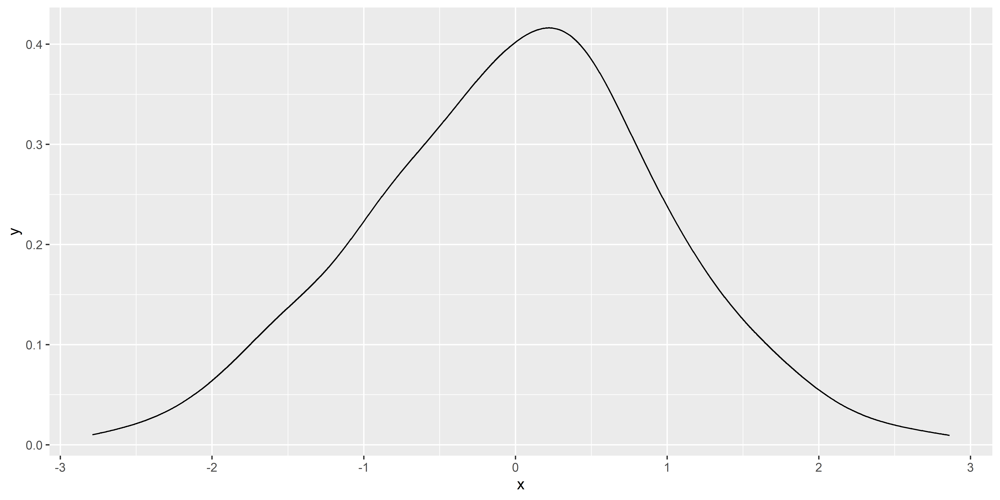
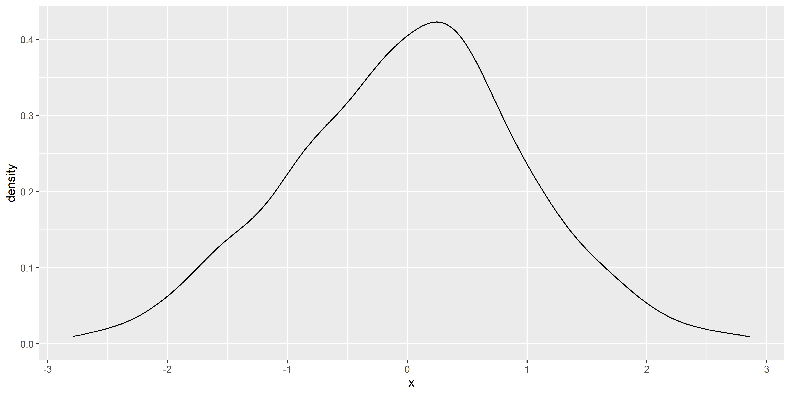

This module is about understanding what we are doing, and why we are doing it.
* Easy as in “not too hard”
Why Bayesian Statistics?
The Bayesian framework for statistics has quickly gained popularity among scientists, associated with the general shift towards open, transparent, and more rigorous science. Reasons to prefer this approach are:
The possibility of introducing prior knowledge into the analysis (Andrews & Baguley, 2013; Kruschke et al., 2012)
Intuitive results and their straightforward interpretation(Kruschke, 2010; Wagenmakers et al., 2018)
Learning Bayes? Back to the Bayesics first
This module adopts a slightly unorthodox approach: instead of starting with Bayesian theory and equations, we will first consolidate various concepts and notions that are present in Frequentist statistics, that will help us to understand and apply the Bayesian framework
We won‚Äôt be talking about Bayes until a few sessions in (‚Äúawww üòû‚Äù)
But everything we do until then will be in preparation for it
Understanding Bayes painlessly requires to be very clear about some fundamental concepts, in particular, probability distributions and model parameters
How to successfuly attend this module
Goal: Becomes master* of Bayesian statistics
Master User: be comfortable using and reading Bayesian statistics
\(\neq\) becoming a master mathematician
Right level of understanding: not too superficial, not too deep
Code shown in the slides should in general be understood
But you don’t need to memorize it
Best to follow along by trying and running the code on your own system
(If you need me to slow down, let me know!)
Ideally, make an Quarto file and write there info and code examples
Slides will be available online
Equations are not generally important
No need to memorize it, but you should understand the concepts
Memorizing a few Greek symbols will be useful
In particular beta\(\beta\), sigma\(\sigma\), mu\(\mu\)
Distributions
A fundamental concept in Bayesian statistics
On Normal Distributions
Why do statisticians hate normal distributions? Because they are ‘mean’!
The “Bell” Curve
The Normal Distribution is one of the most important distribution in statistics (spoiler alert: for reasons that we will see)
What variables are normally distributed?
It is defined by two parameters:
Location (\(\mu\)“mu”)
Deviation/spread (\(\sigma\)“sigma”)
Properties:
Symmetric
Location = mean = median = mode
Deviation = standard deviation (SD)
~68% of the data is within 1 SD of the mean, ~95% within 2 SD, ~99.7% within 3 SD
Note
A Normal distribution with \(\mu = 0\) and \(\sigma = 1\) is also called a z-Distribution (aka a Standard Normal Distribution)
What is a distribution?
A distribution describes the probability of different outcomes
E.g., the distribution of IQ represents the probability of encountering all the different IQ scores
Distributions are defined by a set of parameters (e.g., location, deviation)
It is an abstract and convenient way of describing the probability of various events using a limited number of parameters
The area under the curve is equal to 1 (= describes all possible outcomes)
The unit of the y-axis of a “density plot” is thus irrelevant (as it depends on the x-axis)
Statistical software implement a variety of distributions, which can be used to e.g., randomly sample from them
In R, the r*() functions are used to draw random samples from distributions
E.g., rnorm() = random + normal
# Randomly sample 500 values from a normal distributionmyvar <-rnorm(500, mean =0, sd =1)
Tip
report() from the report package can be used to quickly describe various objects
report::report(myvar)
x: n = 500, Mean = -0.05, SD = 0.97, Median = -0.09, MAD = 1.01, range: [-2.98,
2.72], Skewness = -0.08, Kurtosis = -0.16, 0% missing
Density Estimation
In practice, we rarely know the true distribution of our data
Density estimation is the process of estimating the Probability Distribution of a variable
This estimation is based on various assumptions that can be tweaked via arguments (e.g., method, kernel type, bandwidth etc.)
The resulting density is just an estimation, and sometimes can be off
How to compute
The estimate_density() function returns a data frame with the estimated density
Contains two columns, x (possible values of the variable) and y (its associated probability)
d <- bayestestR::estimate_density(myvar)head(d)
x y
1 -2.982911 0.007639565
2 -2.977338 0.007768074
3 -2.971764 0.007897398
4 -2.966190 0.008027461
5 -2.960616 0.008158385
6 -2.955042 0.008290352
How to visualize a distribution? (1)
Plot the pre-computed density
ggplot(d, aes(x=x, y=y)) +geom_line()

Make the estimation using ggplot
data.frame(x = myvar) |>ggplot(aes(x=x)) +# No 'y' aesthetic is passed (we let ggplot compute it)geom_density()

How to visualize a distribution? (2)
Empirical distributions (i.e., the distribution of the data at hand) is often represented using histograms
Histograms also depends on some parameters, such as the number of bins or the bin width
Like density estimates, it can be inaccurate and give a distorted view of the data
As we have seen, we can estimate the probability density of a random variable (e.g., a sample of data) and visualize it using a density plot or a histogram
Most common distributions have an analytical solution (i.e., a formula) to compute the probability density over a range of values.
It is called the Probability Density Function (PDF) and can be obtained using the d*() functions
E.g., dnorm() = density + normal
It requires a vector of values (x), and the parameters of the distribution (e.g., mean, sd)
# Get 7 evenly-spaced values between -4 and 4x <-seq(-4, 4, length.out =7)x
ggplot(data, aes(x=time, y=trajectory)) +geom_line() +coord_flip() # Flip x and y axes
Exercice!
Can you simulate 20 different random walks and visualize them as different colors?
Tip
You can loop over a sequence of iterations with for(i in 1:20) {...}
The data.frame() function can be used to initialize an empty data frame
The rbind() (“row-bind”) function can be used to concatenate data frames vertically
Solution (1)
Can you simulate 20 different random walks and visualize them as different colors?
data <-data.frame() # Initialize empty data framefor(i in1:20) { walk_data <-data.frame(trajectory =random_walk(10),time =seq(0, 10),iteration = i ) data <-rbind(data, walk_data)}data
Despite its (relative) complexity, the Normal distribution naturally emerges from very simple processes!
This is known as the Central Limit Theorem, which states that the distribution of the sums/means of many random variables tends to a Normal distribution
This is why the Normal distribution is so ubiquitous in nature and statistics!
Because many measurements are the amalgamation result of many random mechanisms
A Galton Board
On Uniform Distributions
Why did the uniform distribution get hired as a referee? Because it always calls it fair and square, giving every player an equal chance!
Uniform Distribution
The Uniform distribution is the simplest distribution
It is defined by two parameters: a lower and upper bound
All values between the bounds are equally likely (the PDF is flat)
Exercice: generate 50,000 random values between -10 and 10 and plot the histogram
Tip: use runif()
# Use runif(): random + uniformdata.frame(x =runif(50000, min=-10, max=10)) |>ggplot(aes(x=x)) +geom_histogram(bins =50, color="black") +coord_cartesian(xlim=c(-15, 15))
Uniform Distribution - Applications
E.g., to jitter the Inter-Stimulus Intervals, to randomly select between various conditions, etc.
Can be used when we want to make no assumptions1 about the distribution of the data
On Beta Distributions
Why do beta distributions love to go to the gym? So that they are not out of shape!
Beta Distribution
The Beta distribution can be used to model probabilities
Defined by two shape parameters, α and β (shape1 & shape2)1
Only expressed in the range \(]0, 1[\) (i.e., null outside of this range)
Make groups. Each groups picks a distribution (Normal, Uniform, Beta, Gamma) and a set of parameters
Then:
Draw 100 random samples from that distribution
Compute the mean of each random subset
Store results in a vector
Repeat 10,000 times
Plot the distribution of the means
Solution
means <-c() # Initialize an empty vectorfor(i in1:10000) { # Iterate x <-rbeta(100, shape1 =10, shape2 =1.5) means <-c(means, mean(x))}
Solution
means <-c() # Initialize an empty vectorfor(i in1:10000) { # Iterate x <-rbeta(100, shape1 =10, shape2 =1.5) means <-c(means, mean(x))}data.frame(x = means) |>ggplot(aes(x=x)) +geom_histogram(bins=40, color="black")
Solution
means <-c()for(i in1:10000) { x <-rbeta(100, shape1 =10, shape2 =1.5) means <-c(means, mean(x))}data.frame(x = means) |>ggplot(aes(x=x)) +geom_histogram(bins=40, color="black")
ü§Øü§Øü§Øü§Øü§Øü§Øü§Øü§Ø
A NORMAL DISTRIBUTION
ü§Øü§Øü§Øü§Øü§Øü§Øü§Øü§Ø
Central Limit Theorem (2)
The Central Limit Theorem hits gain: “the distribution of sample means approximates a normal distribution as the sample size gets larger, regardless of the population’s distribution”
Practical Implications: The Central Limit Theorem is crucial for inferential statistics. It underpins many statistical methods, such as frequentist hypothesis testing and confidence intervals. It allows for the use of normal probability models to make inferences about population parameters even when the population distribution is not normal.
Standard Error (SE)vs.Standard Deviation (SD)
The standard deviation is a measure of the variability of a single sample of observations
The standard error is a measure of the variability of many sample means (it is the SD of the averages of many samples drawn from the same parent distribution). The SE is often assumed to be normally distributed (even if the underlying distribution is not normal).
On Cauchy Distributions
Why don’t statisticians play hide and seek with Cauchy distributions? Because they never know where they’re going to show up and how far away they could be!
Cauchy Distribution
The Cauchy distribution is known for its “heavy tails” (aka “fat tails”)
Characterized by a location parameter (the median) and a scale parameter (the spread)
The Cauchy distribution is one notable exception to the Central Limit Theorem (CLT): the distribution of the sample means of a Cauchy distribution remains a Cauchy distribution (instead of Normal). This is because the heavy tails of the Cauchy distribution significantly influence the sample mean, preventing it from settling into a normal distribution.
On t-Distributions
How do you call the PhD diploma of a Student’s t-distribution? A degree of freedom!
t-Distribution
Both Cauchy and Normal are extreme cases of the Student’s t-distribution
Student’s t-distribution becomes the Cauchy distribution when the degrees of freedom is equal to one and converges to the normal distribution as the degrees of freedom go to infinity
Defined by its degrees of freedom \(df\) (location and scale usually fixed to 0 and 1)
Tends to have heavier tails than the normal distribution (but less than Cauchy)